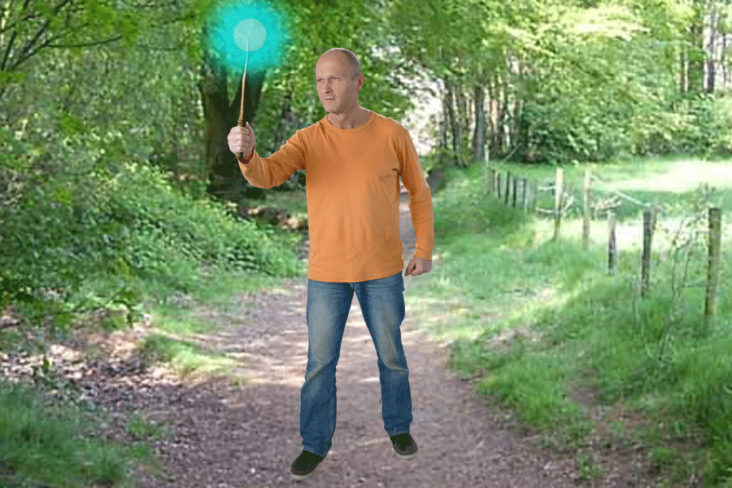

Het gevecht begint. Je stormt op ToFERnaar af. ToFERnaar belaagd je onder een vlaag van spreuken. Na een zwaar gevecht tussen FERvelende spreuken en machtige acties van jou uit ben je zwaar gewond geraakt. Gelukkig heb je uit het gesprek met Feddman van eerder een geheime CSS special attack geleerd. Wat ga je doen?
